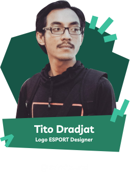

“Vektorial Inspiring” merupakan acara tahunan berupa pelatihan yang diselenggarakan oleh Vektorina Makassar. Sebagai komunitas kreatif pecinta seni desain grafis, bukan hanya mengupayakan agar anggotanya tetap aktif berkarya tetapi juga perlu konsisten menyelenggarakan pelatihan demi pengembangan keterampilan dan kreatifitas para desainer grafis kota Makassar.
Vektorial Inspiring” hadir sebagai upaya menjawab tantagan era 4.0, dimana industri kreatif diharapkan akan memberi kontribusi besar pada kemajuan suatu bangsa. Di era ini pengetahuan dan keterampilan dituntut untuk terus diupgrade, diperbaharui dan ditingkatkan. Olehnya itu, Vektorina Makassar bekerja keras memberikan yang terbaik pada kegiatan ini
Setelah sukses dengan “Vektorial Inspiring” 1 dan 2 di tahun 2017 dan 2018 yang telah diikuti oleh puluhan desainer seSulawesi- Selatan, tahun ini kembali lagi Vektorina Makassar menghadirkan “Vektorial Inspiring vol. 3” dengan konsep yang jauh lebih menarik.


GENERIAL (General Vektorial) adanalah tahap dimana peserta diberi pemahaman tentang kegiatan Vektorial Inspiring 3.0, dan penjelasan tentang teknis seputar kegiatan ini, dan yang mengisi diskusi pada segmen tersebut adalah panitia dari Vektorial Inspiring 3.0.
WORKSHOP adalah tahapan dimana peserta belajar teknik penggunakan tools software dan pengembangan skill.
GATHERING & SHARING adalah tahap dimana peserta, tamu dan pemateri saling berbagi sudut pandang tentang desain, market dan mindset. di kegiatan ini juga adbeberapa games untuk membangun emosional seluruh peserta yang hadir di kegiatan ini.
CHALLANGE adalah tahapan dimana peserta belajar akan diberi ujian berupa brief untuk secara online dipamerkan pada tahapan selanjutnya.
EXHIBITION adalah pameran karya dari para peserta Vektorial Inspiring akan dipamerkan dalam satu kegiatan pameran untuk mengapresiasi para masing-masing peserta Vektorial Inspiring 3.0.


- 
15 - 16 Februari 2020  08.00 - 12.30
08.00 - 12.30
Jln. Hertasning 1 no.3, Makassar, belakang kantor DPRD Kota Makassar

15 - 16 Februari 2020 08.00 - 12.30
Jln. Hertasning 1 no.3, Makassar, belakang kantor DPRD Kota Makassar